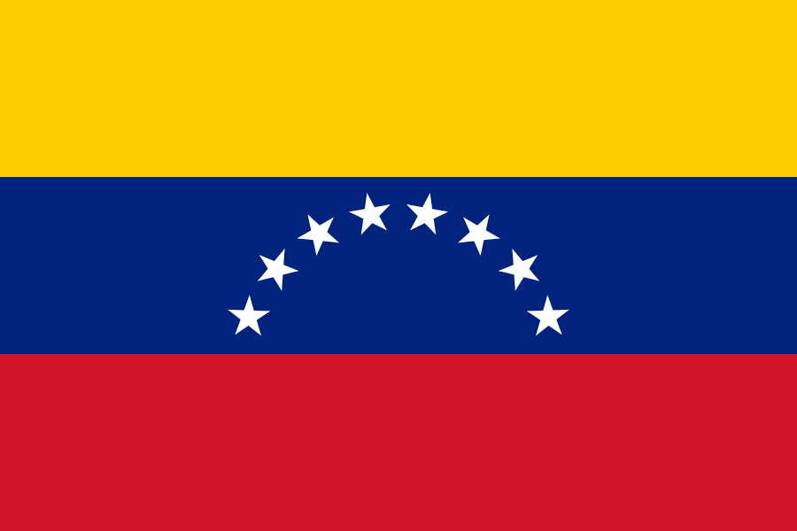
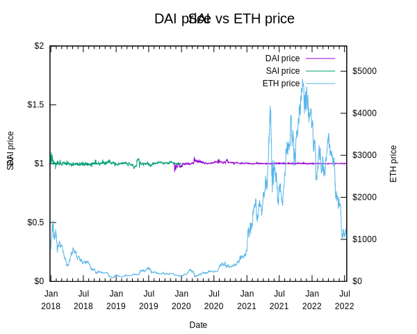

# CS 4501 ### Cryptocurrency <p class='titlep'> </p> <div class="titlesmall"><p> <a href="http://www.cs.virginia.edu/~asb">Aaron Bloomfield</a> (aaron@virginia.edu)<br> <a href="http://github.com/aaronbloomfield/ccc">@github</a> | <a href="index.html">↑</a> | <a href="./03-numbers.html?print-pdf"><img class="print" width="20" src="../slides/images/print-icon.png" style="top:0px;vertical-align:middle"></a> </p></div> <p class='titlep'> </p> ## Stablecoins & Oracles
# Contents [Introduction](#/intro) [Collateralized centralized](#/collcent) [Uncollateralized centralized](#/uncollcent) [Collateralized decentralized](#/colldecen) [Uncollateralized decentralized](#/uncolldecen) [Oracles](#/oracles) [Case study: LUNA/UST](#/casestudy) [Conclusions](#/coinclusion)
# Introduction
## Stablecoins - A coin whose value is meant to not be *non-*volatile - Usually tagged in value to a fiat currency - We'll use the US Dollar ## Stablecoin categories - *Collateralized* stablecoins means that there is some collateral (financial investment) backing up the value of the stablecoin - Ideally as much collateral as the value of the minted stablecoin - If less, then it's *undercollateralized* - *Uncollateralized* means there is no collateral backing up the value of the stablecoin - Fiat currencies are uncollateralized ## Stablecoin categories - The obvious definitions... - *Centralized* means it is run by a single company or entity - Government, corporation, individual, etc. - *Decentralized* means it's not run by a single company or entity - Instead by a group, DAO, or algorithm - These are often called *algorithmic* ## Types <table> <thead> <tr> <th style="border-bottom:0"></th> <th>Centralized</th> <th>Decentralized</th> </tr> </thead> <tbody><tr> <th style="border-bottom:0;border-right:1px solid">Collateralized</th> <td>custodial<br>stablecoins<br>(USDC, USDT)</td> <td>Algorithmic<br> <br>(SAI, DAI)</td> </tr> <tr> <th style="border-right:1px solid">Un(der)-collateralized</td> <td>central bank digital currency<br>(XPD)</td> <td>undercollateralized stablecoins, seigniorage shares</td> </tr> </tbody> </table> - Synthetics ? ## Review: Types of currencies - Commodity currency: made from actual valuable commodities, such as gold - Representative currency: one that is backed up by a valuable "thing", such as gold - Fiat currency: established by the government "by fiat" - What the US dollar is (now) - Cryptocurrency (obviously) ## Stablecoin categories - Fiat-collateralized - Rely on a centralized institution with reserves - Examples: Tether, USD Coin, TrueUSD - Crypto-collateralized - Use cryptocurrency assets as collateral - Examples: Dai (DAI) & Maker (MKR); Havven (HAV) & nUSD, Bitshares (BTS) BitUSD - Algorithmic non-collateralized - Use software-based economic models to maintain stability - Examples: Basis, Kowala, Carbon, Fragments - Hybrid stablecoins - A blend of the above approaches - Examples: Reserve, Saga, Aurora - Boreal ## Definitions > Peg: to have the price of one asset (say, a cryptocurrency) exactly match the price of another asset (say, USD) > Depeg: when the asset (say, a cryptocurrency) looses its pegged price against the other asset (say, USD) <!-- .slide: class="cclogo-slide" --> ## Coins Studied - We are going to see a *lot* of coins in this slide set: - A total of 15: [](https://coinmarketcap.com/currencies/anchorust/) [](https://coinmarketcap.com/currencies/multi-collateral-dai/) [](https://coinmarketcap.com/currencies/fei-usd/) [](https://coinmarketcap.com/currencies/frax/) [](https://coinmarketcap.com/currencies/terra-luna/) [](https://coinmarketcap.com/currencies/magic-internet-money/) [](https://coinmarketcap.com/currencies/maker/) [](https://coinmarketcap.com/currencies/single-collateral-dai/) [](https://coinmarketcap.com/currencies/spell-token/) [](https://coinmarketcap.com/currencies/tomb/) [](https://coinmarketcap.com/currencies/tribe/) [](https://coinmarketcap.com/currencies/usd-coin/) [](https://coinmarketcap.com/currencies/tether/) [](https://coinmarketcap.com/currencies/terrausd/) [](https://coinmarketcap.com/currencies/petrodollar/) - They are meant as examples of the concepts taught - You don't have to memorize them all!
# Collateralized centralized <img src="images/logos/usdc-coin-symbol.svg" class="cclogosubtitle"> <img src="images/logos/usdt-coin-symbol.svg" class="cclogosubtitle">
## Collateralized centralized - Defining characteristics: 1. A single entity manages the coin - The entity could be a bank, company, non-profit, consortium, etc. 2. When coins are purchased, the fiat money used for the purchase goes somewhere it can be retrieved - Investments, equities, bank account, safe, etc. <!-- .slide: class="cclogo-slide" --> ## [](https://coinmarketcap.com/currencies/usd-coin/) USD coin (USDC) - Managed by a consortium named Centre, which is founded by Coinbase (and others) - Backed by actual monetary investments in various accounts - An accounting agency (Grant Thornton) attests monthly to these deposits - If you buy one, the money you pay goes into these accounts - But how risky are those deposits? - If their value goes down, the number of USDC does not change! - Not backed by the US government in any way! <!-- .slide: class="cclogo-slide" --> ## [](https://coinmarketcap.com/currencies/tether/) Tether (USDT) - Similar to USDC in how it works - Run by Tether Ltd - As per [coinmarketcap.com](https://coinmarketcap.com/), it has the 3rd largest market capitalization (`$`83 billion as of 5/1/22) - After Bitcoin (`$`734 billion) and Ethereum (`$`340 billion) - USD Coin is 5th at `$`49 billion - Scandal-ridden - 2019: NY AG accuses Tether of hiding a `$`850 million loss - It's really unclear where their reserves are held - Many accusations that their reserves are much less than the 1:1 ratio they claim - Not backed by the US government in any way! ## Tether Scandals ## Disadvantages - Risky investments
# Uncollateralized centralized <img src="images/logos/xpd-coin-symbol.svg" class="cclogosubtitle">
## Uncollateralized centralized - Because it is *centralized*, it is managed by a single entity - Because it is *uncollateralized*, it is basically the cryptocurrency equivalent of a fiat currency - Only a government could issue a fiat cryptocurrency and have anybody consider it to have value - Thus, these would be a national central bank issued cryptocurrency <!-- .slide: class="cclogo-slide" --> ## Examples - In the US: none - <img src="images/flags/uae.svg" class="flag"> UAE: Dubai issues Emcash (launched in 2017) <br clear='all'> -  Venezuela: Petro (launched in Feb 2018) <br clear='all'> - [](https://coinmarketcap.com/currencies/petrodollar/) Petro (XPD) is the only one here [listed on coinmarketcap.com](https://coinmarketcap.com/currencies/petrodollar/) <br clear='all'> - <img src="images/flags/estonia.svg" class="flag"> Estonia: Estcoin (planned in 2018, not launched) <br clear='all'> - <img src="images/flags/russia.svg" class="flag"> Russia: Cryptoruble (still in development) <br clear='all'> - Sweden: E-Krona (still in development, launch in 2022?) <br clear='all'> - <img src="images/flags/japan.svg" class="flag"> Japan: J-Coin (not actually a cryptocurrency, more like a bank account / credit card combination) <br clear='all'> <!-- .slide: class="cclogo-slide" --> ## [](https://coinmarketcap.com/currencies/petrodollar/) Petro - Created in 2017/2018, it was meant to: - Bypass US sanctions - Shore up the then plummeting bolivar currency - General reception was quite negative - Bloomberg: [Crypto Rating Sites Are Already Calling Venezuela’s Petro a Scam](https://www.bloomberg.com/news/articles/2018-04-03/crypto-rating-sites-are-already-calling-venezuela-s-petro-a-scam), April 3, 2018 - [Wikipedia article](https://en.wikipedia.org/wiki/Petro_(cryptocurrency%29) ## Drawbacks - The government can track this - Many people who get into cryptocurrency do not want government centralization - It's unclear how this would be better than, say, a credit card or a debit card
# Collateralized Decentralized <img src="images/logos/dai-coin-symbol.svg" class="cclogosubtitle"> <img src="images/logos/sai-coin-symbol.svg" class="cclogosubtitle"> <img src="images/logos/mkr-coin-symbol.svg" class="cclogosubtitle">
<!-- .slide: class="cclogo-slide" --> ## [](https://coinmarketcap.com/currencies/multi-collateral-dai/) Dai (DAI) - Originally only backed by (only) ETH, created in 2017 - An ERC-20 token via a smart contract - This coin is [](https://coinmarketcap.com/currencies/single-collateral-dai/) Sai ([SAI](https://coinmarketcap.com/currencies/single-collateral-dai/)) for Single-Collateral DAI - In 2019, [](https://coinmarketcap.com/currencies/multi-collateral-dai/) DAI was created, and is pegged at `$`1 USD - An ERC-20 token cryptocurrency we've [talked about before](tokens.html#/dai) - All SAI was upgraded to DAI; SAI no longer (really) exists - DAI is backed by multiple types of collateral - [](https://coinmarketcap.com/currencies/maker/) Maker ([MKR](https://coinmarketcap.com/currencies/maker/)) is the governance token - [MakerDAO white paper on DAI](https://makerdao.com/en/whitepaper/) - The MakerDAO votes to allow additional types of ERC-20 collateral (and their risk factor) - Source code for [SAI](https://github.com/makerdao/sai) and [DAI](https://github.com/makerdao/dss) ## How to buy DAI - Create a 'vault' via a smart contract that contains the asset you want to convert to DAI - This vault is the collateral; one asset per vault - Via the MakerDAO contract, one 'locks' the vault (transfers it to the contract) and receives DAI in return - Anybody with a vault can do this; you don't need MKR - Only the MakerDAO contract can lock and unlock the vault - This DAI is the 'debt' -- hence *Collateralized Debt Position (CDP)* - To redeem (some or all of) the original assets: - Pay back the DAI generated above - Pay a 'stability fee' (aka interest) on the DAI generated - Withdraw the asset(s) from the vault ## Current DAI stats - See them at https://daistats.com/ - On the 'Collateral' tab the stability fees are listed - It varies by asset, typically 2%-6%, but can be higher or lower - ETH-? provides different levels of risk and reward; see [here](https://forum.defisaver.com/t/converting-between-eth-a-eth-b-and-eth-c-maker-vault-types-using-the-loan-shifter/39) for details - The "Collat. Ratio" is how much DAI has been minted versus the collateral - Above 100% means more collateral is locked than DAI is issued ## Target Rate Feedback Mechanism (TRFM) - The target price (aka peg) for DAI is `$`1 USD - If DAI's price falls below the peg, then there is too much supply (or too little demand) - Stabilization goal: reduce supply and increase demand - The smart contract automatically increases the target rate(s) - DAI is now more expensive to mint - This decreases supply (fewer DAI for the same collateral) - This increases price (DAI are worth more collateral) - If DAI's price rises above the peg, then there is too little supply (too much demand) - The smart contract decreases the target rate(s) - The reverse of the above happens ## DAI Liquidation - [Liquidation](https://makerdao.com/en/whitepaper/#liquidation-of-risky-maker-vaults) is discussed in the [DAI whitepaper](https://makerdao.com/en/whitepaper) - Each asset type has a liquidation ratio - Determined and adjusted by MakerDAO votes) - If the collateral-to-debt ratio - [Here](https://itovault.com/how-dai-liquidation-work-makerdaos-mcd-system/) is how it works ([direct image link](https://itovault.com/wp-content/uploads/2020/12/MakerDAO-Liquidation-1024x916.png)) - You can see the recently [liquidated assets](https://makerburn.com/#/liquidations) - MKR is minted to make up the shortfall - This dilutes the MKR price - But since it's worth so much, there is typically no shortfall - And it' doesn't happen often - Read more about liquidations [here](https://itovault.com/how-dai-liquidation-work-makerdaos-mcd-system/) ## What keeps DAI's peg stable? - Stability fees: these fees build additional collateral in the smart contract - Liquidation if a vault's assets are too low - And minting MKR to make up for any difference in bankrupt vaults - Target Rate Feedback Mechanism <!-- .slide: class="cclogo-slide" --> ## SAI / DAI stability - How well does it work? - Coefficient of Variation (CV) is the standard deviation divided by the mean - It describes the variability of a sample relative to the average - Usually expressed as a percentage - For [](https://coinmarketcap.com/currencies/single-collateral-dai/) SAI, it's 1.33% - For [](https://coinmarketcap.com/currencies/multi-collateral-dai/) DAI, it's 0.92% - For [](https://coinmarketcap.com/currencies/ethereum/) ETH, it's 147.9% - We can also see it as a graph... - I included SAI data until the end of 2019; DAI was introduced Nov 19, 2019; SAI's price has fluctuated quite a lot since then 
# Uncollateralized Decentralized <img src="images/logos/fei-coin-symbol.svg" class="cclogosubtitle"> <img src="images/logos/frax-coin-symbol.svg" class="cclogosubtitle"> <img src="images/logos/tribe-coin-symbol.svg" class="cclogosubtitle"> <img src="images/logos/tomb-coin-symbol.svg" class="cclogosubtitle">
<!-- .slide: class="cclogo-slide" --> ## Introduction - The two categories are: - Undercollateralized stablecoins: FRAX, FEI, IRON, OHM, Gyroscope - backing: diversified portfolio, seigniorage shares as backstop; peg mechanism: redemption; risks: market risks, oracle dependency - [](https://coinmarketcap.com/currencies/fei-usd/) of those, [FEI](https://coinmarketcap.com/currencies/fei-usd/) has the highest market capitalization (#100 as of 5-23-22) - Seigniorage shares: Basis, Maker (backstop), Undercollateralized stablecoins (backstop) - backing: confidence; peg mechanism: supply expansion and contraction; risks: death spiral, oracle dependency <!-- .slide: class="cclogo-slide" --> ## FEI - [](https://coinmarketcap.com/currencies/fei-usd/) Fei [FEI](https://coinmarketcap.com/currencies/fei-usd/) is a stable coin pegged at `$`1 USD - Main website is [fei.money](https://fei.money/); [whitepaper](https://fei.money/static/media/whitepaper.7d5e2986.pdf) - [](https://coinmarketcap.com/currencies/tribe/) [TRIBE](https://coinmarketcap.com/currencies/tribe/) is its governance (DAO) token ## Seigniorage > Seigniorage: the cost of a unit of currency minus the cost to create it ([source](https://www.investopedia.com/terms/s/seigniorage.asp)) Examples: - A USD `$`20 bill cost 11.5¢ to make in 2019 - Seigniorage: `$`19.885 - A USD `$`100 bill cost 14.2¢ to make in 2019 - Seigniorage: `$`99.858 - A USD penny cost 1.5¢ to make in 2016 - Seigniorage: -0.5¢ ## Seigniorage Stablecoins - An algorithmic (aka decentralized) stablecoin - If the value of stablecoin rises above the peg, then more are minted - Usually distributed to existing holders - If the value of the stable coin dips below the peg... - A bond is issued: basically an IOU for more of the stablecoin - Those bonds are sold for lower than the peg amount - People buy these bonds, with the intent to redeem them for the stablecoin once the price rises to the peg, this making a profit - [Reference](https://dailydefi.org/articles/what-are-seigniorage-stablecoins/) <!-- .slide: class="cclogo-slide" --> ## Seigniorage Stablecoins - But what if the coin's price never rises back up to the peg? - Perhaps people lose faith, the market tanks, etc. - These coins have often had trouble holding their peg - Consider the [top seigniorage coins by market cap](https://www.coingecko.com/en/categories/seigniorage) (as of July 2022): - [](https://coinmarketcap.com/currencies/frax/) [FRAX](https://coinmarketcap.com/currencies/frax/) (#47 overall, #1 top seigniorage) has been fairly stable - Number 2 is TerraClassic, which we discuss elsewhere - Number 3 is a variant of FRAX - [](https://coinmarketcap.com/currencies/tomb/) [TOMB](https://coinmarketcap.com/currencies/tomb/) (#792 overall, #4 seigniorage) has not been stable at all - The next highest is #871 overall, so clearly not used much
# Oracles
## Oracles - A smart contract can only use the data on the blockchain - Complex situations require more data than that: - Current exchange rates - Random numbers - The ability to interact with other blockchains - The solution: Oracles > Oracle (n): a person who delivers authoritative, wise, or highly regarded and influential pronouncements ## Oracles We can easily create an oracle: ``` contract Oracle { address deployer; uint public price; // public, so creates a getter constructor() { deployer = msg.sender; } function updatePrice (uint update) external { require (msg.sender == deployer, "Only the Oracle can update this"); price = update; } } ``` - Getting people to trust it is another matter ## Oracle: trusted signer  - The oracle signer (often the deployer) updates the price, and anybody can read it - This works well when the source is centralized - Examples: the oracles on Ethereum that interact with the Polkadot or Polygon chains - Can be a set of trusted signers, any one of which can update the oracle - But a corrupt signer can maliciously manipulate the price <!-- .slide: class="right-float-img" --> ## Oracle: $m$ of $n$ signers  - So we have multiple signers - We expect some variance in the values - Different exchanges will provide slightly different exchange rates - We have to take the *median* value, not the *mean* - We'll see why next <!-- .slide: class="right-float-img" --> ## Oracle: $m$ of $n$ signers  - What if some nodes are corrupted? - We have to take the *median* value, not the *mean* - Here the mean is `$`71 - The median is `$`101 - If more than half are trustworthy, then the oracle will have a (mostly) correct price - Less than half can be traitors! <!-- .slide: class="right-float-img" --> ## Oracle: Schelling oracles  - Each signer puts a *stake* in their vote - We accept the value that has the most stake - Traitors have their stake *slahsed* - Although we allow for some variance in the price - But if we allow for too much variance, a traitor can just give a valid, but low, price <!-- .slide: class="right-float-img" --> ## Schelling oracles & whales  - A *whale* could put in a huge stake to manipulate the price - Knowing full well s/he will lose their stake - Presumably so s/he can make a (bigger) profit off of the price difference
# Case study: LUNAC/USTC <img src="images/logos/aust-coin-symbol.svg" class="cclogosubtitle"> <img src="images/logos/lunac-coin-symbol.svg" class="cclogosubtitle"> <img src="images/logos/mim-coin-symbol.svg" class="cclogosubtitle"> <img src="images/logos/tomb-coin-symbol.svg" class="cclogosubtitle"> <img src="images/logos/ustc-coin-symbol.svg" class="cclogosubtitle">
<!-- .slide: class="cclogo-slide" --> ## Terra, LUNAC, and USTC - Terra is the ecosystem, built upon the Cosmos SDK - Company is called Terraform Labs - Allows devs to build custom blockchains for dApps - [](https://coinmarketcap.com/currencies/terra-luna/) LUNA Classic ([LUNAC](https://coinmarketcap.com/currencies/terra-luna/)) is the (volatile) cryptocurrency <br clear='all'> - Previously just LUNA; had a high of `$`118.74 on April 5, 2022 - Terra vs LUNAC is like the difference between Ethereum & ETH - [](https://coinmarketcap.com/currencies/terrausd/) USD Terra Classic ([USTC](https://coinmarketcap.com/currencies/terrausd/)) (previously just UST) is the stablecoin that was pegged at `$`1 USD <br clear='all'> - The LUNAC cryptocurrency was used to keep the USTC stablecoin on its peg - It's an Ethereum ERC-20 token <!-- .slide: class="right-float-img" --> ## Do Kwon <img src='https://miro.medium.com/max/3150/2*OV9xggK69sh-NyLubhRc1Q.jpeg'> - Kwon Do-hyung, known as Do Kwon, is the founder of Terraform Labs (along with Daniel Shin) - Stanford graduate, Korean national - Founded Terraform Labs in Singapore - Was on CoinDesk's [2021 Most Influential list](https://www.coindesk.com/policy/2021/12/10/most-influential-2021-do-kwon/) - Now widely reviled, and various legal actions are pending against him ## Terra bridges - The Terra protocol allows cross-chain transfers - The particular one between Terra and Ethereum is called the Shuttle ([source code](https://github.com/terra-money/shuttle)) - As far as I can tell: - Both sides have ERC-20 (or equivalent) contracts - And an Oracle for the other blockchain - When you transfer assets into one, the oracle on the other sees that, and gives you assets on the other blockchain - Likely done via the minting and burning of tokens on each side <!-- .slide: class="cclogo-slide" --> ## Abracadabra - Abracadabra is the protocol at [abracadabra.money](https://abracadabra.money/) - [](https://coinmarketcap.com/currencies/spell-token/) Spell ([SPELL](https://coinmarketcap.com/currencies/spell-token/)) is their native token - [](https://coinmarketcap.com/currencies/magic-internet-money/) Magic Internet Money ([MIM](https://coinmarketcap.com/currencies/magic-internet-money/)) is the stablecoin - Abracadabra / SPELL / MIM is analogous to Terra / LUNA / USTC - Their promise: a non-interest bearing asset (coin or token) can be used to generate interest - Like staking - The relevant product is called Degenbox - It "deploys strategies" to generate interest on non-interest bearing coins/tokens <!-- .slide: class="cclogo-slide" --> ## Abracadabra's Degenbox - On the Ethereum blockchain: - You deposit an asset into a 'cauldron' and MIM is minted - Similar to depositing an asset into a 'vault' for DAI - Only some assets are allowed; we'll only talk about USTC - 15% stays on Ethereum mainnet for withdrawals - 85% of that is bridged back to the Terra blockchain - On the Terra blockchain: - The 85% bridged back is deposited into the [Anchor Protocol](https://www.terrablockchain.org/anchor) (also [here](https://theanchor.io/)) to generate aUST - [](https://coinmarketcap.com/currencies/anchorust/) AnchorUST ([aUST](https://coinmarketcap.com/currencies/anchorust/)) was their stablecoin, and was interest-bearing ([coingecko.com](https://www.coingecko.com/en/coins/anchorust) has a price graph) <br clear='all'> - Those aUST are then bridged back to Degenbox on Ethererum mainnet ## Degenbox - The assets bounce back and forth between the blockchains - The users see only this: - On Ethereum, they deposit an asset (coin or ERC-20 token) - They get another ERC-20 asset (aUST) on Ethereum worth the same amount that is generating interest - That ERC-20 asset, aUST, can be used like any other asset ## Looping Stablecoin buys - What if you could use your aUST to borrow more USTC - As aUST is a stablecoin and can be collateral to obtain more USTC - Then you can invest the USTC into more aUST - Then take use that aUST to borrow more USTC - And so on... - This is *looping* a stablecoin buy - It artificially increases demand, since more and more USTC is being minted ## So what happened? - See [FatMatTerra's twitter thread](https://twitter.com/FatManTerra/status/1535623662153437185) - And a [watcher.guru article](https://watcher.guru/news/how-do-kwon-allegedly-cashed-out-2-7b-from-terra-network) that helps explain it (but not all that well) ## The Big Terra Error - The founder of the company had full access to the Bitcoin liquidity - It wasn't, say, locked in a smart contract - Or controlled by a DAO that required many people's votes to liquidate - This allowed him to plunder these assets and (eventually) transfer them to himself ## Takeaways - Most people who invested in LUNA didn't know much about what it did - The scam to loot LUNA was quite complex - Beyond the knowledge of most (almost all?) LUNA investors ## References - [Medium: Abracadabra Degenbox -- Let’s cast spell on UST](https://everythingblockchain.medium.com/abracadabra-degenbox-lets-cast-spell-on-ust-7d2dd8d6e43c) - [How To Use The Terra Bridge](https://www.altcoinbuzz.io/bitcoin-and-crypto-guide/how-to-use-the-terra-bridge/) - [A Complete Guide to Abracadabra Money – SPELL, MIM and sSPELL](https://blocmates.com/blogmates/a-complete-guide-to-abracadabra-money-spell-mim-and-sspell/) - [Article on LUNA / UST background](https://www.coindesk.com/learn/what-is-luna-and-ust-a-guide-to-the-terra-ecosystem/) - [Overview of the crash](https://www.cnet.com/personal-finance/crypto/terras-luna-crypto-crash-how-ust-broke-and-whats-next/) - [Do Kwon reportedly cashed out $2.7 billion in the span of a few months prior to the LUNA/UST collapse](https://watcher.guru/news/how-do-kwon-allegedly-cashed-out-2-7b-from-terra-network?c=70) (and [twitter announcement](https://twitter.com/watcherguru/status/1535707516784476163?s=21&t=cZ9G69kuatTgBDdnliEieQ)) - [This reddit thread](https://www.reddit.com/r/CryptoCurrency/comments/v9ypa6/heres_how_do_kwon_cashed_out_27_billion_using/) describes the article also - [Votium](https://votium.app/) and [Votium quick start guide](https://docs.votium.app/explainers/quickstart-guide) - [Convex](https://www.convexfinance.com/)
# Conclusions
<!-- .slide: class="cclogo-slide" --> ## Coefficient of Variation Comparison - [](https://coinmarketcap.com/currencies/multi-collateral-dai/) Dai (DAI): 0.92% - [](https://coinmarketcap.com/currencies/ethereum/) Ether (ETH): 147.85% - [](https://coinmarketcap.com/currencies/fei-usd/) Fei USD (FEI): 4.09% - [](https://coinmarketcap.com/currencies/terra-luna/) Luna Classic (LUNAC): 169.13% - [](https://coinmarketcap.com/currencies/single-collateral-dai/) Sai (SAI): 1.33% - [](https://coinmarketcap.com/currencies/usd-coin/) USD Coin (USDC): 0.50% - [](https://coinmarketcap.com/currencies/tether/) Tether (USDT): 1.66% - [](https://coinmarketcap.com/currencies/petrodollar/) PetroDollar (XPD): 57.84%